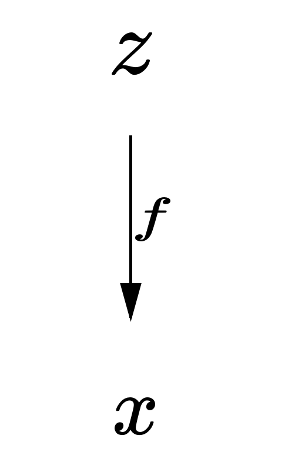
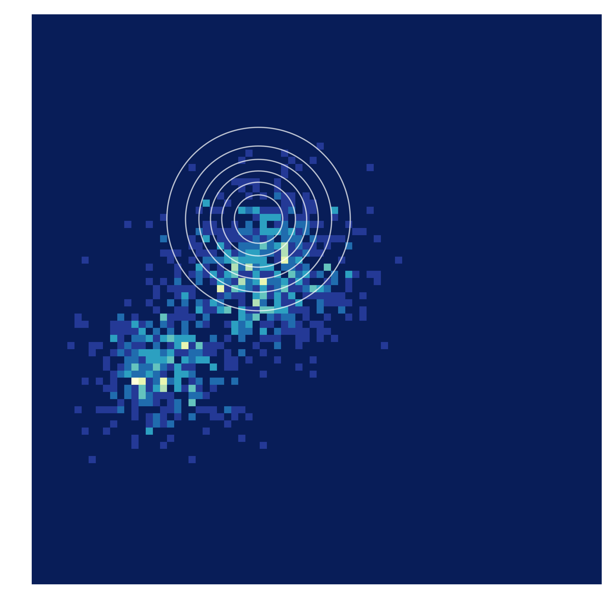
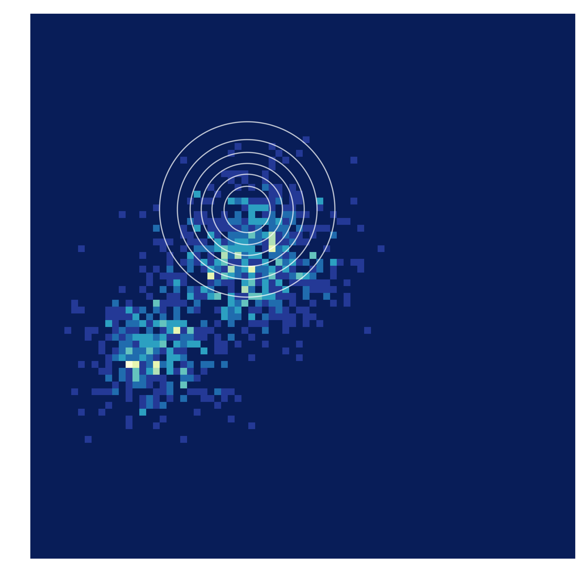

Organizing the landscape of deep generative models
Motivation
Over the past few years a plethora of generative models have been introduced
and it can be difficult to see how they all fit together.
The objective of this post is to review the underlying characteristics of a
generative modeling approach instead of any specific model itself.
Any specific approach can then be
seen as the consequence of a series of decisions along certain axes
that lead to these characteristics.
From this vantage point its easier to tailor the approach for the application at hand
as a practitioner, and to see natural extensions to explore as a researcher.
Introduction
Generative modeling is the task of learning a model from data that we
can sample new points from. This often translates into learning a
probability distribution that is close to some real data distribution
from which we have access to samples. In recent years deep neural networks
have been leveraged to amortize inference across observed data
in latent variable models, sample new points via flexible implicit
models and more.
Phrasing the task more formally as done in
Bottou et al :
View the data as a sample from an underlying probability distribution
$\mathcal{Q}$ defined over a Polish space $\mathcal{X}$
(Complete and separable whose topology comes from a distance function).
Denote by $\mathcal{P}_{\mathcal{X}}$ the space of probability measures
$\mu$ defined on $(\mathcal{X},\mathcal{U})$,
$\mathcal{U}$: Borel $\sigma$-algebra generated by open sets of $\mathcal{X}$.
Consider a way to compare elements of $$\mathcal{P}_{\mathcal{X}}: (P,Q)
\rightarrow D(P,Q) \in 0, \infty)$$
The goal, given a family of distributions $\mathcal{P}_\theta \in P_X$,
is to find $$\min_{\theta}L(\theta)=D(Q, P_{\theta})$$
Organizing the landscape of deep generative modeling approaches is
a daunting task, but we can start by stating some high level
delineating attributes.
-
The model
How the parameterized family of distributions $P_{\theta}$ and any other
auxiliary models are represented.
-
The principle of learning
How to bring the distribution defined by our generative model closer
to the true data generating distribution:
$\min_{\theta}L(\theta)=D(Q, P_{\theta})$. This is often very closely
tied with the choice of model.
-
The underlying distance/divergence
What measure $D(Q, P_{\theta})$ is being minimized. Often the consequence
of the model or principle of learning.
Many popular deep generative models in use today can be indexed by how they express these attributes. These categories are often very intertwined, modeling choice might also fix the techniques that are available for learning, for instance.
There are also many other factors that can be used to compare different
approaches to each other. Despite these shortcomings, It's a reasonable way to try and start
organizing the landscape of deep generative models.
In this review we will take a look at each of these attributes in turn and the different
choices that can be made under each of them. We will also provide specific examples of approaches
that make a respective choice to give an idea of how practical incarnations of these choices look like.
We will pay special attention to (3) and discuss how different choices of divergence/distance
impact the final learned model and how different measures of $D$ relate to each other.
We will also discuss downstream applications of deep generative modeling, and what
desiderata we may have for each task. Finally we will examine how different choices of $D$ meet those desiderata.
The model
There are many different ways to model the family of distributions
$P_{\theta}$ and any auxiliary models in the context of deep generative modeling.
Two general categories are latent variable models and implicit models.
Within each category there are innumerable extensions, and variations that we necessarily
cannot cover within the scope of this post. Additionally, there are also modeling approaches
that fall outside these categories. Since many popular models relate closely to these two
archetypes, it makes sense to include them in our taxonomy.
Latent variable models
Latent variable models tie observations $x \in \mathbb{R^{d_{x}}}$ with unobserved variables
$z \in \mathbb{R^{d_{z}}}$ and model parameters $\theta \in \mathbb{R^{d_{\theta}}}$
They typically specify a story for how a sample is generated with respect to the latent structure. The goal is to then infer the hidden structure from
observed data.
As you can imagine, one of the simplest instantiations of this approach would be to associate
a single latent variable with each data point and have a generative story :
$$z \sim p(z)$$
$$x \sim p(x|z)$$
This is the model shown in the illustration below, and corresponds to a generative modeling approach called the variational auto-encoder
.

Implicit models
In many practical situations we may have an easy mechanism to sample new points but no explicit
likelihood. These types of models are typically referred to as implicit .
The type of implicit models that appear in deep generative modeling
typically transform noise from some base distribution into a sample using a differentiable,
parameterized map.
As an example consider a mechanism to sample from the generative distribution $\mathbb{P_{g}}$. First sample a vector from some base distribution $z \sim p(z)$, next pas it through a function $g: \mathcal{Z } \to \mathcal{X}$, where g has parameters $\theta$.This seemingly simple formalism has been leveraged to much success in models like Generative Adversarial Networks
and its innumerable varieties. The aforementioned procedure is depicted below.

Principle of learning
It should be of no surprise that the principle of learning employed is a key property of a
generative modeling procedure. It should be equally unsurprising that this area is incredibly
rich and vast. Consequently there are many different specific mechanisms for
learning in deep generative models and they are often closely related to the modeling choices made.
For each of the two archetypical modeling choices discussed earlier, there
comes an accompanying preferred mechanism for learning. Many alternative approaches, as well as
extensions and combinations exist from these two broad principles of learning.
We follow the general exposition found in Mohamed et al
For latent variable models the general principle of learning most commonly employed in the context of deep generative models is maximum likelihood estimation via variational inference.
Maximum likelihood and variational inference
To recall the definition of a latent variable model, take
$$x \in \mathbb{R^{d_{x}}}$$ $$z \in \mathbb{R^{d_z}}$$ $$\theta \in \mathbb{R^{d_{\theta}}}$$
Let $\mathbb{D}$ be a dataset of $N$ elements.
The likelihood of any single example under the model is then
$$\log p_{\theta}(x)= \log \int p_{\theta}(x|z)p(z)dz$$
Which in the form of an expectation is:
$$\log \mathbb{E_{p(z)}}[p_{\theta}(x|z)]$$
The likelihood of $D$ is then the sum of the individual likelihoods:
$$\log p_{\theta}(\mathbb{D}) = \sum_{i=1}^N \log \mathbb{E}_{p(z)}[p_{\theta}(x_i|z)]$$
Though this seems straightforward enough, it is difficult to optimize directly.
One problem is that the $z$ is usually high dimensional in this setting and it maybe prohibitively expensive to handle the above integral.
Additionally, $p_{\theta}(x_i|z)$ may be represented by a complex function like a neural network which has no tractable closed form.
A way to deal with this is to introduce an approximate family of densities $q$ that is much easier to handle computationally and then try and approximate the true posterior $p(z|x)$
with this family.
Doing some manipulation shows how the introduction of this approximate density
changes the relevant expectation
$$\log_{p_{\theta}}(D) = \sum_{i=1}^N \log \mathbb{E_{p(z)}}[p_{\theta}(x_i|z)]$$
$$\log \mathbb{E_{p(z)}}[p_{\theta}(x_i|z)]=\log \mathbb{E}_{q_i(z)}[\frac{p_{\theta}(x_i|z)p(z)}{q_i(z)}]$$
By Jensen's inequality:
$$\log \mathbb{E_{q_{i}(z)}}[\frac{p_{\theta}(x_i|z)p(z)}{q_i(z)}] \geq \mathbb{E_{q_i}(z)}[\log\frac{p_{\theta}(x_i|z)p(z)}{q_i(z)}]$$
$$\log_{p_{\theta}}(\mathcal{D})\geq \sum_{i}^N \mathbb{E}_{q_i(z)}[\log \frac{p_{\theta}(x_i|z)p(z)}{q_i(z)}]$$
We can write:
$$\mathbb{E}_{q_i(z)}[\log \frac{p_{\theta}(x_i|z)p(z)}{q_i(z)}] = \mathbb{E}_{q_i(z)}[\log p_{\theta}(x_i |z)] - KLD(q_i||p)$$
Which is often referred to as the evidence lower bound or ELBO and consists of a reconstruction term $$\mathbb{E_{q_i}(z)}[log_{p_{\theta}}(x_i|z)]$$
and a regularizer which controls how far $q_i$ strays from the prior $$KLD(q_i||p)$$
We made a tradeoff, as is often the case:
an easier expectation to work with, in exchange for another thing to optimize.
One natural way to do this optimization is to alternate between finding a good
setting for $q$ and good model parameters, this is known as
the variational EM algorithm. Since the way $q$ is actually represented
depends on various factors, we will just use simplified notation and refer to the
optimal q at any time-step for any data point as $q_{i}^*$.
In the expectation step:
$$q_i^{*}(z) = \text{argmax}_{q_i}E_{q^{*}_{i}(z)}[\log \frac{p_{\theta}(x_i|z)p(z)}{q_{i}^{*}(z)}]$$
In the maximization step:
$$\theta^{*} = \text{argmax}_{\theta}\sum_{i=1}^N \mathbb{E}_{q_i^* (z)}[\log\frac{p_{\theta}(x_i|z)p(z)}{q_{i}^{*}(z)}]$$
We could instead introduce a parametric family of densities:
$$ q_i^*(z) = \text{argmax}_{q_i}\mathbb{E_{q_i^*(z)}}[-\mathcal{F}(x_i, z)]$$
$$\text{argmax}_{\phi} \mathbb{E_{q_{\phi}(z|x)}}[-F_{\phi}(x_i, z)]$$
The popular generative model known as the Variational Autoencoder (VAE) does exactly this.
s .
The VAE uses the gaussian variational family $q_{\phi}$ indexed by a mean $\mu$ and a covariance $\Sigma$.
The latent variable $z_i$ associated to a data point $x_i$ is then sampled from $\mathcal{N}(\mu_i, \Sigma_i)$
The conditional distributions $p(x_i| z_i)$ is modeled by a neural network and
so is the conditional distribution $p(z_i|x_i)$ which maps data points to variational
parameters $\eta$:($\mu_i, \Sigma_i$). The loss is then $\mathbb{E}_{q_i(z)}[\log_{p_{\theta}}(x_i|z)]-KLD(q_i||p)$
Summary:
Prior: $$z \sim \mathcal{N}(0, \mathbb{I})$$
Data sufficient statistics $$\eta = f_{\theta}(z)$$
The data conditional likelihood $$x \sim \mathcal{N}(\eta)$$
The data sample: $$x \sim \mathcal{D}$$
Latent sufficient statistics $$\eta=f_{\phi}(x)$$
Posterior sample $$z=\mathcal{N}(\eta)$$
Some ways that have been taken to extend this approach include creating richer families
of approximate densities , better stochastic optimization techniques to optimize the ELBO ,
and automating variational inferennce so its use is not model specific .
For implicit models with no explicit likelihood the principle
of learning typically employed is Learning by comparison.
Will will refer to this alternatively as Comparison style learning, comparison,
or GAN style training. .
Learning by comparison
Let the data generating distribution be $p^*$,
the approximating distribution be $q$ and our samples from $p^*$ be $D$.
Often we don't have access to the likelihood function $P(D|\theta)$ but
can easily sample from our model $q_{\phi}$
and have access to samples from the data generating distribution $p^{*}$.
We are also primarily interested in cases where our sampler takes the
form of a differentiable map from random vectors to samples:
$f_{\phi}(z) \to X$. The function $f$ can be thought of as a deep neural network
in this context.
In this scenario our only tractable path to learning is to compare real samples
from $p^*$ to samples from the approximating distribution defined by the generative model.
We can compare the difference of the two ($q - p^*$) or the ratio $\frac{q}{p^*}$.
Lets focus on the ratio for now since it corresponds to the formulation
popularized by Generative Adversarial Networks .
Let the ratio of the two distributions be $r_{\phi} = \frac{q}{p^*}$ such that when $r_{\phi}$ is 1 they are identical. We can try and develop a learning procedure that attempts to
improve $r_{\phi}$ by alternating between Comparison and
Estimation steps.
In the Comparison step we build an auxiliary model to evaluate
differences between observed data and generated data.
In the estimation step we adjust model
parameters accordingly. The general framework for this type of learning is as follows:
First combine the real data and simulated data to form
$\{\boldsymbol{x_1}..\boldsymbol{x_N}\}$.
Next assign the real and fake samples binary labels (+1, -1) respectively, denoting their
class membership.
Observe that $$p^*(\boldsymbol{x})=p(\boldsymbol{x}|y=1)$$ and
$$q(\boldsymbol{x}) = p(\boldsymbol{x}|y=-1)$$ We can now write the ratio
as $$\frac{p^*(\boldsymbol{x})}{q(\boldsymbol{x})} =
\frac{p(\boldsymbol{x}|y=1)}{p(\boldsymbol{x}|y=-1)}$$
Using Bayes theorem to invert the conditional probabilities gives:
$$\frac{p(y=+1|\boldsymbol{x})p(x)}{p(y=+1)} / \frac{p(y=-1|\boldsymbol{x})p(x)}{p(y=-1)}$$
This allows us to equate $r_{\phi}$ with the class probability ratio
$$\frac{p(y=1|x)}{p(y=-1|x)}$$
Next assume a scoring function (discriminator)
$$D_{\theta}(\boldsymbol{x}) = p(y=+1|\boldsymbol{x})$$
Since we have binary labels it makes sense to use a standard Bernoulli loss:
$$\mathcal{F}(\boldsymbol{x}, \theta, \phi) = E_{p^*(x)}[\log D_{\theta}(\boldsymbol{x})]
+ E_{q_{\phi}}(x)[\log (1-D_{\theta}(\boldsymbol{x}))]]$$
Our optimization can now be
$$min_{\phi}max_{\theta}\mathcal{F}(\boldsymbol{x}, \theta, \phi)$$
This naturally leads two alternating steps with respect to either set of parameters:
-
Update $\theta$: $\nabla_{\theta} E_{p^*}(x)[\log D_{\theta}(\boldsymbol{x})]
+ \nabla_{\theta} E_{q_{\phi}}(x)[\log(1-D_{\theta}(\boldsymbol{x}))]$
-
Update $\phi$: $-\nabla_{\phi}E_{q(z)}
[\log D_{\theta}(f_{\phi}(\boldsymbol{z}))]$
This style of learning corresponds to the approach popularized by
generative adversarial networks in the context of deep learning, where $D_{\theta}$ is called
the discriminator and is a neural network, and $f_{\phi}$ the generator which is itself a
neural network.Throughout this post we may refer to GAN style training and learning by comparison alternatively. .
Note that We can vary $f_{\phi}$ to get different generative models. This
choice of $f_{\phi}$ is closely related to which $D$ is minimized. It's also related to a
class of divergences called Integral Probability Metrics
$$M_f(p,q)= sup_{f\in \mathcal{F}}|\mathbb{E}_{p(x)}[f]- E_{q_{\theta}(x)}[f]|$$.
Where the $f$ in question is sometimes referred to as the critic, test function or witness.
Mohamed et al
Choice of $D$
One of the most important modeling properties is the underlying divergence
or distance between $P_R$ and $P_G$ thats being minimized.
Often times this attribute is simply the consequence of other decisions.
For instance maximum likelihood learning is asymptotically equivalent
to minimizing $KL(P_r, P_{\theta})$ when both distributions admit densities and are
absolutely continuous with respect to some measure $\mu$
An interesting question is whether it makes sense take a reverse approach and begin by thinking of which underlying $D$ should be minimized, and making other decisions accordingly.
To begin to think about this question lets review some of the different
families of divergences and outline some models that relate to each
family.
First note that to qualify as a true distance a measure $\textit{d}$ must fulfill the following:
.
- $d(x, x)=0$
- $x \neq y \implies d(x,y)>0$
- $d(x,y) = d(y,x)$
- $d(x, y) \leq d(x, z) + d(z, y)$
When a choice $d$ fails to fulfill (3) or (4), we will call it a divergence.
To encompass both divergences and distances we will refer to $D$ from our
original definition of generative modeling.
There are many families of $D$ and more modeling procedures
that utilize them. Going through some well studied families of $D$ and showing some selected
examples of modeling approaches will hopefully show how many cases in
the literature fit together in practice.
F-divergences
A well studied class of divergences are the $F-divergences$.
Let $P$ and $Q$ be two probability distributions over a space
$\Omega$ such that $P$ is absolutely continuous with respect to $Q$.
Then, for a convex function $f$ such that $f(1)=0$ the
f-divergence of $P$ from $Q$ is defined as:
$$D_f(P ||s Q) = \int_{\Omega} f(\frac{dP}{dQ})dQ$$
Different choices of $f$ give us different F-divergences:
| Name |
$\mathbf{\mathcal{f}(t)}$ |
| KL-divergence |
$t \log t$ |
| Reverse KL-divergence |
$-\log t$ |
| Alpha divergence |
$
\begin{cases}
\alpha \neq \pm 1 & \frac{4}{1-\alpha^2}(1-t^{\frac{(1+ \alpha)}{2}}) \\
\alpha = 1 & t \ln t \\
\alpha = -1 & -\ln t
\end{cases}
$
|
| Squared Hellinger |
$(\sqrt{t} -1)^2$ |
| Jensen Shannon |
$-(t+1)\log \frac{1+u}{2} +u \log u$ |
| Pearson $\mathcal{X}^2$ |
$(u-1)^2$ |
| Total variation |
$\frac{1}{2} |t-1|$ |
The most famous F-divergence is the Kl divergence which shows up all
throughout machine learning and statistics
$$KL(\mathbb{P_r}, \mathbb{P_g}) = \int \log(\frac{p_r(x)}{p_g(x)})p_r(x) d\mu(x) $$
where both distributions $\mathbb{P_r}, \mathbb{P_g}$ are absolutely continuous
and admit densities $p_r, p_q$ with respect to some measure $\mu$ defined on
$\mathcal{X}$.
In the case of generative modeling it often comes up because the maximum likelihood estimation problem
$\max_{\theta \in \mathbb{R}}\sum_{i}^{m} \log P_{\theta}(x_i)$
is equivalent to $KL(P_{r}, P_{\theta})$ when the parameterized density $P_{\theta}$ corresponds to the
distribution $\mathbb{P_{\theta}}$ and $P_{r}$ is the density of $\mathbb{P_r}$.
One concern is that if the model density $P_\theta$ doesn't actually exist then it doesn't make sense to do maximum likelihood learning. Furthermore, if the data distribution $P_r$ doesn't actually admit a density, it doesn't make sense to do density estimation at all.
To get some intuition for the KL divergence, consider this plot of
values of $\log(\frac{P_{r}(x)}{P_g}(x))$ evaluated on a discrete grid.
F-gan
Nowozin et al provide a general framework
for doing learning by comparison using generic F-divergences. They build on earlier work by
Nguyen et al .
Recall that an F divergences for two distributions $P$ and $Q$ with
absolutely continuous densities $p$ and $q$ with respect to some measure $dx$ on a
domain $\mathcal{X}$ is $$D_f(P || Q)\int_{\mathcal{X}}q(x)f(\frac{p(x)}{q(x)})dx$$
where
$f:\mathbb{R_{+}}\to \mathbb{R}$ is a convex, lower semicontinuous function satisfying f(1)=0.
Nguyen et al first note that the
Fenchel conjugate of $f$ is $f^*(t)=\sup_{u \in dom_f}\{ut -f(u)\}$
They then show that they can get a
lower bound using the aforementioned conjugate:
$$D_f(P||Q) \geq \sup_{T \in \mathcal{T}}(E_{x \sim P} [T(x)] - E_{x \sim Q}[f^*(T(x))])$$
here $\mathcal{T}$ is any arbitrary function class $T: \mathcal{X} \to \mathbb{R}$
This bound is tight when $T^*(x) = f'(\frac{p(x)}{q(x)})$ This can provide useful
guidance when choosing a $T$ in practice.
Nowozin et al
move from the fixed model case to the task of estimating
the parameters for a generative model $Q$ given
some true distribution $P$.
Say we parameterize Q with $\theta$: $Q_{\theta}$ which takes a random
vector and returns a sample. Now take a function $T_{\omega}$
that maps a sample to a scalar
Then estimation can be done by finding the saddle point
of $$F(\theta, \omega)=E_{x \sim P }[T_{\omega}(x)] - E_{x \sim Q_{\theta}}[f^*(T_{\omega}(x))]$$
The final piece of this procedure is respecting the domain of $f*$, which is done
by limiting the range of $T_{\omega}$ by using
$T_{\omega}(x)=g_{f}(V_{\omega}(x))$ where $g_f: \mathbb{R} \to dom_{f^*}$
is an activation function and $V_{\omega}$ is any function that maps
$\mathcal{X} \to \mathbb{R}$.
Now they can give a different suggested $g$ for every F-divergence
to make sure $dom_{f^*}$ is respected.
Plugging in $V_{\omega}$ gives the new objective $F(\theta, \omega)=
E_{x\sim P} [g_{f}(V_{\omega}(x)) + E_{x\sim Q_{\theta}}[-f^*(g_f(V_{\omega}(x)))]$
The authors give values for $g_f$ and $f^*$ for all the f-divergences
Integral Probability Metrics
As we alluded to in an earlier section, another well studied family of
divergences/distances are the Integral Probability Metrics. Since they have a
natural connection to learning by comparison they are
frequently used precisely in that context.
Given a real valued, bounded and measurable set of functions
$\mathcal{F}$ on $M$:
$$
\gamma_{\mathcal{F}}(P, Q) =
\sup_{f \in \mathcal{F}}|\int_{M} f dP - \int_M f dQ|
$$
Different choices for the function class $\mathcal{F}$ give us different IPMs
as shown in Sriperumbudur et al
Given a metric space $(M, \rho)$ with $\mathcal{A}$ being a Borel
sigma algebra induced by metric topology. let $\mathcal{P}$ be the set
of all Borel probability measures on $\mathcal{A}$
| Name |
Choice of $\mathcal{F}$ |
| Dudley metric |
$\mathcal{F} = \{f : ||f||_{BL} \leq 1\}$
Where:
$||f||_{BL} := ||f||_{\infty} + ||f||_L$
$||f||_{\infty}:= \sup\{|f(x)| : x \in M\}$
$||f||_L:=\sup\{|f(x) -f(y)|\rho(x,y) :x \neq y \in M\}$
|
| Maximum mean discrepancy |
$\mathcal{F} = \{f: ||f||_{\mathcal{H}} \leq 1 \}$
$H$ is a reproducing kernel Hilbert space with $k$ as its reproducing kernel.
|
| Kantorovich metric |
$\mathcal{F}=\{f: ||f||_L \leq 1 \}$ |
| Total variation distance |
$\mathcal{F} =\{f: ||f||_\infty \leq 1\}$ |
| Kolmogorov distance |
$\mathcal{F}=\{\mathcal{1}_{(\infty, t]}, t \in \mathbb{R}^d\}$ |
The Kantorovich metric, from the above table,
has a dual form
that is gaining increasing visibility within machine learning called the
Wasserstein distance/metric: $W(\mathbb{P}, \mathbb{Q})$
The Wasserstein-1 distance is defined as $W(\mathbb{P_r}, \mathbb{P_g})=
\inf_{\eta \in \prod(\mathbb{P_r}, \mathbb{P_g})} \mathbb{E}_{x,y} \sim \eta[|| x-y||]$
Wasserstein GAN
In Arjovsky et al
the authors develop a method for deep generative modeling through comparison style learning
using the Wasserstein distance. They start by proving that it makes sense
to use the Wasserstein distance in the context of neural networks and gradient
descent.
Take a distribution $\mathbb{P_r}$ over some $\mathcal{X}$.
Let $Z$ be a random variable over $\mathcal{Z}$, let $g: \mathcal{Z} \text{ X } \mathbb{R^d} \to \mathcal{X}$
be a function parameterized by $\theta$ ($g_{\theta}$). Finally lets call the distribution of $g_{\theta}(Z)$
$\mathbb{P}_{\theta}$ Arjovsky et al show that $W(\mathbb{P}_r, \mathbb{P}_{\theta})$
is continuous in $\theta$ if $g$ is, and that if $g$ is locally Lipshitz then $W(\mathbb{P_r}, \mathbb{P_{\theta}})$ is too. Finally if
$g_{\theta}$ is a neural network and theres a prior over $p(z)$ such that $\mathbb{E}_{z \sim p(z)}[|z|]< \infty$ then all
the above are still true
We can now use the comparison based learning approach to optimize the Wasserstein loss but for the fact that the infimum is not computationally tractable. Luckily the Wasserstein distance can be re-written as
$$ W(\mathbb{P_r}, \mathbb{P_{\theta}})=\sup_{|f|_{L \leq 1}} \mathbb{E}_{x \sim \mathbb{P_r}}[f(x)]-\mathbb{E}_{x \sim \mathbb{\theta}}[f(x)]$$
where we take a instead take a supremum
over 1-Lipschitz functions
If we relax this to K Lipschitz functions $||f|_{L}|\leq K$ then the authors of suggest that the following makes sense:
$$max_{w \in W}\mathbb{E}_{x \sim \mathbb{P}_r}[f_{w}(x)]- \mathbb{E}_{z \sim p(z)}[f_w(g_{\theta}(z))]$$
The authors prove that if we can find $w \in W$ for which the supremum in the original formulation is achieved, then you we would get $W(\mathbb{P}_r, \mathbb{P_{\theta}})$ up to some constant K.
Learning is then done by comparison with the small twist that we clamp
the weights $W$ such that they lie in a fixed box so that$f_w$ is guaranteed to be K-Lipschitz
Arjovsky et al
point out a lot of useful properties of the Wasserstein distance
not shared by F-divergences. They argue
that if one wants to use an F-divergence, the data distribution $P_r$
and the model distribution $P_{\theta}$ must both be absolutely continuous
with respect to some measure $\mu$ and admit densities. If this
is not the case, for instance when the data distribution lies on a low dimensional manifold,
or the model density does not exist, then an F-divergence doesn't make sense.
This is usually solved in practice by injecting noise into the model.
They also note that this noise will necessarily affect the sharpness of the final samples.
Another claim made in Arjovsky et al is
that the Wasserstein distance provides stronger guarantees for
convergence when doing estimation by comparison (GAN) style learning than the jensen-shannon, KL or total variation.
They show via an example and through a proof that the Wasserstein distance
induces a weaker topology than KL, JS or TV divergences, and thus
provide more favorable convergence properties.
The maximum mean discrepancy has also been used in conjunction with
comparison style learning as in
Li et al
Assume data $\{x_i\}_{i=1}^n$ where $x_i \in \mathcal{X}$
and $x_i \sim \mathbb{P_{\mathcal{X}}}$
they then follow the implicit modeling approach of a
generator $g_{\theta}$ which transforms samples
$z \sim \mathbb{P_z}, z \in \mathcal{Z}$ into $g_\theta(z) \sim \mathcal{P_{\theta}}$
They then compare $\mathbb{P}_{\theta}$ and $\mathbb{P_{\mathcal{X}}}$ using
a two sample test via a kernel maximum mean discrepancy.
Given two distributions $\mathbb{P}, \mathbb{Q}$ and a kernel k,
the squared MMD distance is
$$M_k(\mathbb{P}, \mathbb{Q})= || \mu_{\mathbb{P}} - \mu_{\mathbb{Q}}||_{H}^2$$
This is equivalent to
$$2 \mathbb{E}_{\mathbb{P}, \mathbb{Q}}[k(x,y)] + \mathbb{E_{\mathbb{Q}}}[k(y, y')] $$
If k is a characteristic kernel then we
know $M_k(\mathbb{P}, \mathbb{Q})=0 \iff \mathbb{P} = \mathbb{Q}$
This could lead to the following training procedure for $g_{\theta}$:
$$\min_{\theta} \max_{k \in \mathcal{K}} M_k(\mathbb{P_{\mathcal{X}}}, \mathbb{P_{\theta}})$$
Its intractable to optimize over all characteristic kernels, but consider the following:
if $f$ is an injective function and k is characteristic then the function
$\hat{k}=k \circ f$ where $\hat{k}(x, x') = k(f(x), f(x'))$ is also
characteristic. This means we can replace the search over all ks with a
search over a family of injective functions parametrized by $\phi $ and some
fixed k:
$$\min_{\theta}\max_{\phi}
M_{k \circ f_{\phi}}(\mathbb{P_{\mathcal{X}}}, \mathbb{P_{\theta}})$$
To approximate this the authors use neural networks to
approximate $g_{\theta}$ and $f_{\phi}$
Since the gradient $\nabla_{\theta}(max_{\phi}f_{\phi} \circ g_{\theta})$ has to be bounded
they clip $\phi$. Finally since $f_{\phi}$ has to be injective they use the fact
the fact that for an injective function f there must be an inverse $f^{-1}$ such
that $f^-1(f(x))=x, \forall x \in \mathcal{X}$.
Also: $f^-1{f(g(z))}=g(z) \forall z \in \mathcal{Z}$. They choose to approximate this with
an autoencoder. So the discriminator $f_{\phi}$is broken into $\phi={\phi_e, \phi_d}$
for the encoder and decoder respectively.
The relaxed objective is then :
$$\min_{\theta} \max_{\phi} M_{f_{\phi_e}}(\mathbb{P}(\mathcal{X}),
\mathbb{P}(g_{\theta}(\mathcal{Z}))) -
\lambda \mathbb{E_{y \in \mathcal{X} \bigcup g(\mathcal{Z})}}||y-f_{\phi_d}
(f_{\phi_e}(y))||^2$$
This is optimized in the alternating style of comparison based (gan)
learning discussed earlier.
A final example we will look at is with the Cramer distance as introduced in .
The Cramer distance for two distributions $\mathbb{P}, \mathbb{Q}$
over $\mathbb{R}$ with cumulative distribution functions $F_P, F_Q$ respectively
is $l^2_2(P,Q):= \int_{-\infty}^{\infty} (F_P(x) - F_Q(x))^2 dx$
The square root of which is a proper metric:
$$l_p(P, Q):= (\int_{-\infty}^{\infty}|F_P(x) - F_Q(x)|^p dx)^\frac{1}{p} $$
This is equivalent to the Wasserstein metric when p=1. The integral
probability metric form of the Cramer distance is the dual form:
$l_p(P,Q)= \sup_{f \in \mathbb{F_q}} |\mathbb{E_{x \sim P}} f(x) - \mathbb{E_{x \sim Q}}f(x)| $
where $\mathbb{F_q := \{f:f \text{ is absolutely continuous}, || \frac{df}{dx}||} \leq 1\}$ and
$p^{-1} + q^{-1} =1$
To extend to the multivariate case they use the energy distance :
$$\mathcal{E}(P,Q):= \mathcal(E)(X,Y):= 2\mathbb{E}||X-Y||_2 - \mathbb{E}||X-X'||_2 - \mathbb{E}||Y -Y'||_2$$
where P, Q are distributions over $\mathbb{R^d}$ and $X, X'$ and $Y, Y'$ are
independent random variables distributed according to P and Q respectively.
The above is equal to
$$f^*(x):=\mathbb{E}||x- Y'||_2 - \mathbb{E}||x - X'||_2$$
thus $$\mathcal{E} = \mathbb{E}f^*(X)- \mathbb{E}f^*(Y)$$
Now to use comparison style training we define the two losses for the
generator and discriminator:
With real sample $x_r \sim P$, and two generated samples $x_g, x_g \sim Q$
and $\epsilon \sim Uniform(0,1)$
take $\hat{x} = \epsilon x_r + (1- \epsilon) x_g$
Take a discriminator (or critic) $f(x) = ||h(x) - h(x^{'}_g)||_2 - ||h(x)||_2$
The generator loss
$$L_g = ||h(x_r) -h(x_g) ||_2 + ||h(x_r)-h(x'_g)||_2- ||h(x_g)-h(x'_g)||_2$$
A surrogate generator loss:
$$L_{surrogate}=f(x_r)-f(x_g)$$
Then the discriminator/critic loss is
$L_{critic}= - L_{surrogate}+ \lambda(||\nabla_{\hat{x}} f(\hat{x})||_2 -1)^2$
To motivate using the Cramer distance the authors give 3 ideal desiderata for any divergence to obey and show that the Cramer distance satisfies them while the KL and Wasserstein do not.
Bellemare et al
List 3 ideal qualities that a divergence should obey as:
- Scale sensitive
For two random variable X, Y with distributions P, Q
and divergence d $d(X,Y):=d(P,Q)$, d is scale sensitive
of order $\beta$ if there exists a $\beta>0$ such that for
all X, Y and a real value $c>0$ $$d(cX, cY) \leq |c|^{\beta}d(X, Y)$$
- Sum invariant
A divergence $d$ is sum invariant if whenever A is independent from X, Y $d(A + X, A + Y) \leq d(X,Y)$
- Unbiased sample gradients
given $X_m := X_1 .. X_m $ drawn from a distribution P, the empirical distribution
$\hat{P_m}:= \frac{1}{m}\sum_{i=1}^m \delta_X$ and a distribution $Q_{\theta}$
$$\mathbb{E_{x_m \sim P}} \nabla_{\theta}l^2_2(\hat{P_m}, Q_{\theta}) = \nabla_{\theta}l^2_2(P, Q_{\theta})$$
Bregman divergences
For two continuous distributions $\mathbb{P}$, $\mathbb{Q}$ and a strictly
convex function $\phi(x):\mathbb{R} \to \mathbb{R}$
$$D_{\phi}(\mathbb{P}, \mathbb{Q}) = \int[
\phi(p(x))-\phi(q(x)) - \phi'(q(x))(p(x) - q(x))]d\mu(x)]$$
where $p(x)$ and $q(x)$ are the probability density functions of
$\mathbb{P}$ and $\mathbb{Q}$ respectively and $\mu$ is the base measure.
Different choices of $\mathbb{\phi}$ lead to different Bregman divergences as shown in
| Name |
Choice of $\mathbb{\phi}$ |
| $L^2$ loss |
$\phi(x)= ||x||_{2}^2$ |
| Itakura-Saito divergence |
$\phi(x) = - \log(x)$ |
| KL divergence |
$\phi(x) = \sum_{i=1}^d x_i \log x_i$ |
| Mahalonobis distance |
$\phi(x) = x^T A x$ where A is positive definite |
Experiments
The divergence that ends up being minimized has a big impact on the final learned model.
Extending experiments done in Theis et al
we show here plots of an Isotropic Gaussian trained to fit data generated
from a random mixture of gaussians using various choices of $D$ .
Though things are very different in high dimensions, we can start seeing the kinds
of trade offs being made by visualizing this simple setting and hopefully gain some
intuition.
 Wasserstein distance
Wasserstein distance
 Forward KL
Forward KL
 Pearson Chi-squared
Pearson Chi-squared
 Reverse KL
Reverse KL
 Squared Hellinger
Squared Hellinger
 Total Variation

Energy based gans
Total Variation

Energy based gans
Downstream tasks and desiderata, a qualitative look
We've discussed many different divergences/distances that might be minimized between the approximating distribution and the real data generating distribution. Since this divergence/distance plays such an important role in defining the qualities of the generative model it seems like it would make sense to center the generative modeling process around its choice.
Any desiderata for $D$ is closely tied to the downstream application that the generative model is going to be used for.
Different tasks have different evaluative criteria that in turn demand different things from $D$.
We could call these two levels of desiderata the task level desiderata and the divergence level desiderata. In addition we might want
general divergence level desiderata that are universally applicable across tasks.
Take general divergence level desiderata $DDG$ composed of properties $\{p_1..p_n\}$.
Then for a task $\mathcal{T}$, we could specify task level desiderata $DT_\mathcal{T}$ composed of many properties $q$: $DT_{\mathcal{T}} = \{q_1...q_n\}$. $DT_{\mathcal{T}}$ could then be converted to divergence level desiderata $DD_{\mathcal{T}}$ composed of properties $\{z_1....z_n\}$,
$DD_{\mathcal{T}} = DDG \bigcup \{z_1...z_n\}$. Now we can say that any choice of $D$ that satisfies all the properties in $DD_\mathcal{T}$ are suitable for $\mathcal{T}$.
That's easier said than done as it is very difficult to determine the
task level desiderata ($DT_{\mathcal{T}}$) as well as to convert them into divergence level desiderata ($DD_{\mathcal{T}}$). Its also difficult to phrase the properties $p_{1..n}, q_{1...n}, z_{1..n}$ formally.
We can at least get started with a qualitative discussion. We will begin by trying to outline the general divergence level criteria $DDG$. Then we will take some common downstream applications and discuss the task level desiderata for those applications. This would allow us to informally discuss how those might translate to divergence level desiderata and what choices of $D$ fulfill those divergence level desiderata.
First lets look at the general divergence level desiderata $DDG$, taking some from .
- Optimizable by a gradient descent scheme
- Possesses unbiased gradients during training
- Scale sensitive
- Sum invariant
- Good convergence properties
There are many possible reasons one might need a generative model.
Some downstream applications are:
- Generating new samples
- Learning latent interpretable structure from data
- Modeling physical phenomena
- Learning representations
- Reinforcement learning
Generating new samples
Sometimes the downstream task is as straightforward as generating new
points. In this case the task level desiderata may be:
- High fidelity samples
- Diverse samples
In the context of natural images, which is the most heavily studied type
of data for deep generative modeling, these properties might translate into:
- Realistic looking images
- Diversity in images
Those task level desiderata could translate to the following divergence level desiderata:
- Encourages realistic looking samples
- Doesn't drop modes of the data distribution
- Respects the nature of the data distribution to model it accuratly
These issue are discussed in detail by
Arjovsky et al.
They begin by pointing out that the distribution of natural images is likely supported by a low dimensional manifold and so it doesn't make sense to model it with a density. Without a density $KL(\mathbb{P_r}, \mathbb{P_{\theta}})$ is undefined.
Even if we aren't extremely concerned with the theoretical impediments, this usually means that in practice we must inject noise into the model distribution $P_{\theta}$ to get
maximum likelihood to work properly in the cases when $P_{\theta}$ doesn't naturally admit a density. The necessary consequence of which is a blurriness in the generated images.
.
This is a strong argument against using maximum likelihood based approaches to satisfy $DD$ 3 and $DD$ 1.
What about using F-divergences with comparison style learning? As is done in F-gans? and discussed earlier.
Here no artificial noise is added, but $DD$ 3 is still violated since we suspect that the distribution of natural images lies on a low dimensional manifold, and our data generating distribution does as well.
So at least for images we have narrowed down the most promising choice to comparison style training with an
Integral Probability Metric. Now there are just the $DDG$ to consider.
Arjovsky et al show that the Wasserstein distance has favorable convergence properties and is easy to train. So the wasserstein distance satisfies all the $DDG$ except 2, .
Using the MMD results in samples that are qualitatively similar to the Wasserstein gan, but
Li et al claim higher inception scores than WGAN with the Cifar-10 dataset. MMD satisfies all the $DDG$ except 2.
A similar case can be made for the Cramer Gan
which gives samples similar to the aforementioned approaches. They claim
that the Cramer distance has unbiased gradients as described in the previous section, which the Wasserstein does not, thus satisfying all
the general desiderata we set forth for divergences.
It seems as though there isn't any compelling reason to choose any IPM over another except for potentially $DDG$ 2. The main issue here is the
difficulty in evaluating the sampling ability of generative models beyond visually inspecting the
samples.
What about in cases other than natural images?
Deep generative models have been primarily evaluated using image data which has lead much of the empirical and theoretical work to "overfit" to this type of data.
One thing we know is that sampling from an arbritraily high dimensional density
might be prohibitively difficult .
Now lets consider ($DD$ 2): diversity in our generated samples .
We know that the KL divergence and maximum likelihood learning heavily penalizes for not covering parts of the data.
if $P_r(x)>0$ but $P_{\theta}(x) \to 0$ the integrand of the KL loss grows to infinity.
This means
that its a good divergence to avoid mode dropping but may
put mass in areas it doesn't really have to.
Qualitatively Arjovsky et al claim that the Wasserstein GAN
does not empirically show evidence of mode dropping. The
Cramer gan or also shows similar empirical results demonstrating that mode dropping is not occuring.
Though many papers using IPMs with comparison style training claim
that mode dropping isn't occurring, its really hard to rank approaches
using visual inspection of samples.
Learning latent interpretable structure
If the primary goal is to learn interpretable latent structure,
then the natural way to do this is by using a latent variable model
Implicit models that model the generative process as a differentiable
black box sampler of data don't typically have the property of
possessing any interpretable components that are learned from data.
Furthermore there is no natural way to do backward inference $p(z|x)$ other
than optimization based schemes $\min_{z}|| g_{\theta}(z) - x ||$ which
aren't very satisfactory.
The most mature body of inference schemes in latent variable modeling
comes from likelihood based techniques like variational
inference. If instead of finding the KL divergence between the approximating and
exact posterior $KL(q(z) || p(z|x)$ we use other divergences, this leads to
different approximate inference algorithms like
expectation propagation and belief propagation, but these have not been
as well studied in the context of deep generative modeling and do not enjoy
many of the asymptotic properties that variational methods do (like lower bounding
the true log likelihood)
Modeling physical phenomena
When modeling physical phenomena there are many different cases to consider.
In some situations, the causal story of how a sample is generated is known to you
or fixed in advance (particle physics).
In other situations some of the causal mechanism that
generated the data may be fully known but there are free parameters that need
to be learned from data.
If the causal mechanism that generated the data is exactly known,
then a comparison based learning approach using any divergence seems reasonable.
The only concerns then are of sample fidelity and diversity which we discussed before.
If some of the causal story of how the data is generated is known, but
there are other parts to be learned, then we are once again in the regime of
latent variable models and could resort to maximum likelihood based approaches for
learning.
Representation learning
Though this is one of the most interesting applications of deep generative models,
its also the hardest to quantify. Loosely speaking we can say that we want to
learn flexible, reusable representations of complex high dimensional
data. All forms of generative modeling seem promising for this at some level or another.
Our task level desiderata could then be
- Flexible, reusable representations
- Interpretable representations
- Structured representation
$DDT$ 1 and 2 can be fulfilled in some way by most divergences.
If it is desirable that the representation learned is structured and interpretable ($DDT{3,4}$)
then latent variable models seem appropriate.
Siddharth et al show how to learn disentangled representations from data using a extended VAE type architecture. They use variational inference for learning.
Johson et al combine graphical models and neural networks to learn structured representations. They also use variational inference for learning.
Reinforcement learning
The use of deep generative models in Reinforcement learning is a somewhat different context then the other applications discussed so far.
Two recent examples : and
both make use of an
auxiliary generative model that generates future trajectories that are used
in planning. They also make use of losses like negative log likelihood to
learn their model of the environment and thus subscribe to maximum likelihood
learning. Since this is a nascent application category for deep generative models. Lets just take a look at an example to get some idea of how it generative models are being used in this context.
Weber et al Make use of
environmental models, or models that can simulate imagined future
trajectories.
Chosen actions in a particular rollout follow a policy $\hat{\pi}$
The authors call the combination of policy and environment model the imagination
core module.
The core module might predict $n$ trajectories $\mathcal{\bar{T_i}... \mathcal{\bar{T_n}}}$
that consist of features $(\bar{f_{t+1}}, ..., \bar{f_{t+\mathcal{T}}})$
where $t$ is the current time and $\mathcal{T}$ is the length of the rollout
and $\hat{f_t+i}$ is the output of the environment model. They also
use a rollout encoder $\mathcal{E}$ that takes an imagined rollout
and emits an embedding $e_i = \mathcal{E(\mathcal{\hat{T_i}})}$.
They summarize all of this by using an aggregator $A$ to convert embeddings
into a single code $c_{ia}= \mathcal{A}(e_{1}, ... e_{n})$
Then policy based RL happens like usual, except by combining a model free-path
and an imagined one. The output, which combines the model free path
and the imagined one is a policy vector $\pi$ and a value $V$. The
environment model defines a distribution that
is trained using negative log likelihood loss, which is equivalent to
minimizing the KL divergence. The training data came from partially pre-trained
agents, and the environment model was pre-trained and fixed before experiments.
Conclusion
We tried to organize the landscape of deep generative models by their modeling
choices, the principle of learning employed, and the underlying divergence that ends up being minimized. We attempted to delineate some broad categories which
we described in more detail, but necessarily omitted many variations and alternatives. We looked at different families of distances and divergences between distributions and provided examples of how different popular models
minimize those divergences. Finally we began a discussion on task level desiderata for various down stream applications, and how they might translate to divergence level desiderata.
It became clear at this point that its very hard to say anything rigorous about how to formally state the two levels of desiderata, or show that divergences meet those desiderata.
Future work
An interesting area of future work would be to create formal
task level desiderata for various down stream applications and convert them into likewise formal divergence level desiderata and showing which divergences/distance meet those desiderata.